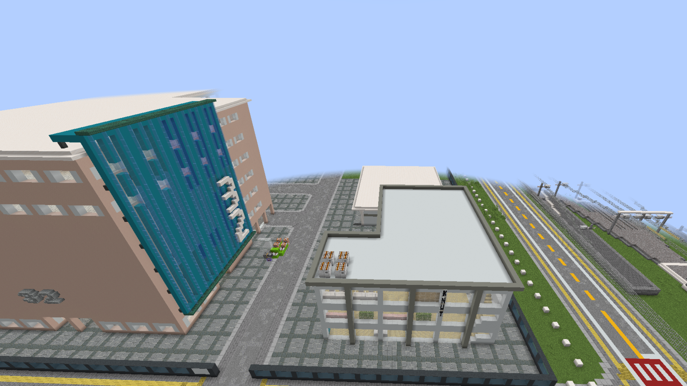

Konno University
Konno University, the planned fourth institution in the Limaru City Server, is currently under construction in the eastern area of Takarazaki, intended to serve as both an academic center and a social hangout for teenagers. Visually, the campus features distinctive architectural elements, including a prominent building with sleek teal-colored paneling contrasting with a more traditional light brown facade, alongside other modern structures with flat grey roofs and large windows, all set against the backdrop of Limaru's developing urban landscape, complete with adjacent rail lines and carefully laid out roadways. This university is uniquely tailored to the roleplay Minecraft environment, with a curriculum focused on specialized courses such as Redstone Engineering, Command Block Theory, and Train Carts Engineering, ensuring it develops the technical talent necessary for the continued growth and operation of Limaru's complex infrastructure.
